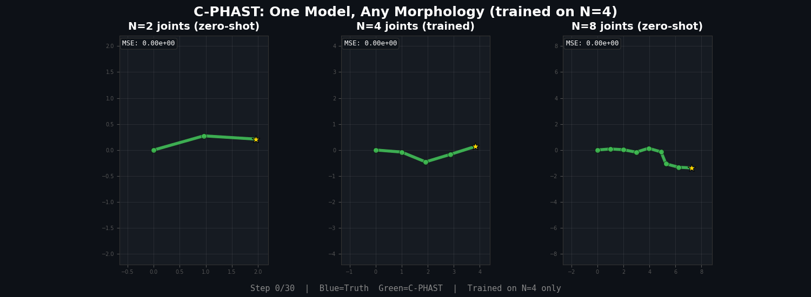

Energy transferred per secondThe meaning shared by both domains
Torque × angular velocityMechanical power
What makes the composition physical?
Each component stores energy H, exchanges it through ports, and dissipates some through R. The port output is paired with the input so their product is power.
ẋi = (Ji − Ri) ∇Hi + Biui
yi = BiT∇Hi û = −Ĉ ŷ, ĈT = −Ĉ
The internal connection redistributes power without creating it: ŷTû = 0. A line or contact that stores or dissipates energy needs its own physical account. This classical cancellation property constrains the model; it does not establish prediction accuracy or an exact finite-step balance.
Reusable components and structured energy models are established ideas. C-PHAST brings component reuse together with history-based state initialization, candidate consequence queries, and analysis of when prediction errors permit a reliable comparison.
Roles of the closest comparisons · experimental settings remain separate
Approach
Established contribution
Question tested here
Compositional pHNN
Learn and connect subsystem dynamics
Prediction after new attachment
N-PHDAE
Learn component laws in circuit constraints
Accuracy and numerical completion
CT-SUBNET
Infer state from input/output histories
Hidden-current prediction from voltage
PHAST
Structured single-system dynamics and state inference
Reuse beyond one assembled system
These comparisons evaluate complete procedures, not a single isolated architectural change. The paper gives the original references, training assumptions, and model definitions.
The four-unit backbone stays fixed. The fifth unit can attach at two different buses. Forecast both enlarged networks before making either connection.
Same local laws and starting states. Different attachment.
New / Frozen 12-scenario stress study
404.54 mA. A 400 mA limit.
At the preselected highest-stress scenario, cPHNN predicts below the limit and selects connection B in all five fits. C-PHAST correctly rejects both attachments. N-PHDAE cannot complete both forecasts in any of those five fits.
Independent simulated reference, not hardware. No tuning or corrected variants. All scenarios and fits remain available in the demo.
Abstentions are incomplete comparisons, not wrong completed decisions. N-PHDAE has 80 state-conversion failures and two propagation-time consistency failures. Its completed B forecast at the stress corner predicts 633.67 mA: correct rejection, inaccurate peak.
Supplied states; 20-second forecasts; synthetic limits. Existing training data and budgets differ. This extrapolation study is separate from the component-only paper result below.
The earlier source-network-calibrated study includes corrected N-PHDAE. Both qualified methods rank 80/80 pairs correctly there. It remains separate from the new original-model stress study and the component-only paper result.
Component-only training
Freeze the laws. Change the connection.
>40×lower voltage error in every complete paired fit
C-PHAST completes 160/160 forecasts; compositional pHNN completes 150/160. Supplied wiring, line laws, and starting states isolate the composition question.
Five fits × 16 starts × two candidates. Fit 3 has ten pHNN initialization failures: retained in completion counts, excluded from paired errors. Ratios use the displayed RMSEs. Training procedures differ.
How do the unaugmented baselines compare with supplied states?
A separate fixed three-unit benchmark supplies the starting states to all methods. Five fits, eight two-second forecasts each. Baseline model definitions are unchanged; N-PHDAE uses its upstream consistency option.
Supplied-state study · not the corrected-model tutorial
Method
Voltage RMSE (mV)
Completed
Compositional pHNN
192.97 ± 42.01
40/40
N-PHDAE
No five-fit aggregate
33/40
C-PHAST
1.09 ± 0.25
40/40
N-PHDAE fit 2 completes one of eight forecasts. A successful-only error is not a complete-cohort comparison. Other values are mean ± SD across fit means.
What if the sensors measure voltage, but not current?
Infer the starting state from history.
One second of voltage history and known inputs supports a two-second forecast. This sensing study keeps the network fixed.
Noise SD 0.02 V; five fits and 40 forecasts per method. Both methods use richer calibration labels. C-PHAST has supplied line physics; the estimators differ.
67.6% lower mean error. Across-fit standard deviations are shown.
The grid asks whether learned parts can predict a new connection. With robots, we can take that question further: add joints, change the body, then use predictions to compare actions.
Robotics
What can a robot model reuse?
Start with an arm that gains joints. Then change the robot, ask it to choose an action, and finally compare predictions with real measurements.
Four related questions, tested in separate studies. The trained models differ between studies.
1 of 4 · Simulated arms
Train with four joints. What happens when there are eight?
Training4 jointsLearn from this arm only
Testing2–8 jointsReuse the local laws, no refitting
A model that treats the whole arm as one fixed-size object cannot simply accept twice as many joints. C-PHAST reuses a local dynamics model for each joint and assembles it at the new size.
Give it five position observations and the upcoming torques. Then stop supplying observations: can it predict the next one second of motion?
One second is 50 model updates. This controlled simulator tests repeated joint dynamics and their coupling, not a full industrial arm with arbitrary contacts.

Earlier saved illustration: blue is the reference; green is C-PHAST. The animation shows two, four and eight joints, not arbitrary morphologies. The numerical study below uses three seeds.
The local laws can carry over. How well depends on what they know.
With supplied local physics, errors stay small at the tested sizes. When local physics must be learned, the longer forecasts are less accurate, even though the model still runs at the new count.
New coupling entries beyond the four-joint training block were not learned. This demonstrates reuse of local laws, not discovery of arbitrary new interactions.
Selected counts · one-second joint-position MSE · lower is better
Joints
Local physics supplied
Local physics learned
2
0.0029 ± 0.0001
0.0684 ± 0.0038
4 (training size)
0.0017 ± 0.0000
0.0645 ± 0.0053
8
0.0014 ± 0.0000
0.0584 ± 0.0044
All sizes, training choices, and limitations
The paper tests 2, 3, 4, 5, 6 and 8 joints. The displayed rows are a subset, not an average over sizes. Means ± SD use three seeds and 20 test trajectories per count and seed. The supplied-physics model has 13,015 parameters; the learned-physics model has 23,386 and uses rollout-aligned training. Partial-physics and one-step-trained variants remain in the full table.
The simulated coupling redistributes power without storing or dissipating it. These tests do not establish learned contact, friction, or rigid joint-limit enforcement.
Adding copies of a familiar joint is one test. What if the number of parts stays the same, but the robot itself changes?
2 of 4 · Simulated quadrupeds
Does it still predict well on a robot it never trained on?
Learn the leg model onANYmal-DFour legs, three joints each
Test without retraining onGo2Same layout, different body and motors
The arm study changed the number of joints. Here both robots have twelve joints, but their dimensions, masses and actuator responses differ.
Five observations of Go2’s joint positions set the starting state. The model then uses the supplied commands to predict the next one second, without more measurements. It receives no Go2 training data or body specifications.
The forecast contains 50 model updates. We are testing a motion predictor, not transferring the walking controller.
Earlier transfer visualization. Compare predicted joint motion with the target recording. The clip shows C-PHAST, Shared-GRU and MPNN; it is not a replay of the five-seed table below, whose compact comparison uses a fixed-dimension GRU.
A better fit to the training robot did not mean a better prediction of the new one.
The GRU baseline, a sequence model of the whole robot, has lower error on ANYmal-D. On the unseen Go2, C-PHAST has about 35% lower mean error than that GRU. This is a transfer result, not perfect gait prediction.
Five seeds; joint-position MSE in rad2; lower is better. These two rows retain all five seeds.
One-second forecasts (50 updates) · mean ± SD
Model
ANYmal-D Training robot
Go2 Unseen robot
Fixed-dim GRU
0.005 ± 0.000
0.112 ± 0.005
C-PHAST
0.045 ± 0.000
0.073 ± 0.001
Other baselines, model sizes, and prediction limits
C-PHAST has 40,034 parameters; the fixed-dimension GRU has 43,020. The full comparison includes Shared-GRU, MPNN, DeepSets, monolithic PHAST, Neural ODE and persistence, with all exclusion counts reported.
Lower position error alone does not establish faithful gait continuation: open-loop motion can become over-smoothed. Receiving new measurements is a separate tracking protocol, not the prediction test shown here.
Predicting motion is useful. Can those predictions also help choose what a robot should do?
3 of 4 · A decision in simulation
The robot has been pushed. Which response would you try?
Earlier push-response recording. Different push strengths can produce recovery or failure. This is context, not footage of the 20-case decision study.
Keep the same body and connections. Now the choice is the command: continue walking, move right, return toward the default joint stance, or use another saved candidate.
A separate body-plus-legs model predicts the next 0.16 seconds. A trained selector chooses a command from those predictions and the current state. The simulator then executes that choice independently for 0.48 seconds, before resuming the normal command.
This is not the transferred leg model from the previous study. The detailed walkthrough uses recorded measurements, not a new simulation.
It delays failure on average. It does not produce more recoveries than the best fixed response.
Across all 20 cases, the model-based choice gains 0.105 seconds in mean survival score over always moving right. Both recover in 10 of 20 cases; some model-based choices are worse.
That is a narrower finding than “the robot learns to recover.” The benefit is in comparing responses, and it is not uniform.
20 held-out cases · higher is better
Response rule
Recovered
Mean survival score in steps
Continue walking
8/20
114.65
Always move right
10/20
116.55
C-PHAST selector
10/20
121.80
How the comparison was made
Five seeds, two push directions and two friction settings; nine candidate commands. Model and selector are frozen before evaluation. “Always move right” is the best fixed command in these evaluation results, not a prospectively selected baseline.
Survival is scored to first failure or step 140, including initial settling; recovery means no recorded failure by that limit. The paired gain is 5.25 steps, with seed-clustered 95% interval [2.50, 7.05]. This is one decision, not repeated replanning.
Earlier video: three responses before a different push
This recording branches at step 70 before a forward push at step 75: previous action, front catch, and lateral support. The newer 20-case study chooses after a lateral push. It has saved forecast summaries and telemetry, but no matched camera recording.
Simulation lets us test alternatives from the same state. On a real robot, can we at least check the predicted physical consequences against measurements?
4 of 4 · Real Spot recordings
Can we estimate the work and battery draw behind a real robot’s motion?
Real hardware, operated by a person. C-PHAST did not command Spot.
Watching the robot move does not tell us how much work its joints do or how much current it draws. Its recorded forces, motion and battery measurements let us check those quantities.
Fit consequence predictors using four recordings; compare their outputs with measurements from two held-out recordings.
This is a retrospective check. Some inputs describe motion that already happened, so these results do not show that the system could make the same prediction before acting.
The estimates follow measured work and current in held-out recordings.
When measured work or battery draw rises, the predictions tend to rise too. Correlation near 1 means strong agreement in variation; it does not mean the numerical error is zero.
This checks physical readouts from real data. It does not demonstrate a deployed C-PHAST controller or a complete learned-dynamics rollout on Spot.
173 held-out windows · correlation (Pearson r)
Measured quantity
Correlation
Positive joint work
0.973
Absolute joint work
0.975
Locomotion work
0.971
Battery draw
0.943
What is measured, and what would live use still need?
Work integrates torque × joint velocity over time. Positive work counts positive contributions; absolute work counts their magnitudes. Battery draw here is mean discharge current, not battery energy. Training uses 897 windows from four bags; testing uses 173 from two held-out bags. Histories span two seconds and outcomes five seconds.
Inputs include descriptors measured from the executed future. Before live use, those descriptors would have to be supplied by a planner or forecasted. These are direct consequence predictors, not a PHASTCore rollout. Exact retraining of the energetic ensemble is unverified because checkpoints, resolved settings and stopping epochs were not retained with the exported predictions.
Onboard video and a separate test across recording sessions
A separate regression study predicts objective scores from physical channels. Mean Pearson/Spearman agreement is 0.880/0.860 on the fixed bag split, and 0.652/0.545 when each of six episodes is held out in turn. This harder generalization test is not pooled with the work-prediction results above.
Together: tests of reusing local laws, predicting a changed body, choosing a response, and estimating physical consequences. An end-to-end hardware system combining them remains to be demonstrated.
02 / Emergent properties
What can a connection create without changing the parts?
It can carry a disturbance to damping elsewhere, or make a hidden state affect an existing sensor. Neither benefit follows from connection alone.
A new route to existing damping
Energy that persists in one component can reach loss in another. The finite-time result compares expected energy under specified linear–quadratic conditions.
A local decay certificate exists for one learned DGU checkpoint. None of the three tested alternative attachments improved the frozen expected-energy comparison.
Saved known-law triangle/parallel-line tests use the same sensors and initial-current target. Both graphs still have a hidden mode; this is partial recovery.
These audit reports are supporting workspace evidence, not new experiments or additions to the paper. The sampled-noise inference check does not validate the continuous-Brownian formulation or a learned-law observer.
03 / Reliable comparisons
Which futures can we actually distinguish?
A low predicted cost is not enough. Its error margin must be small enough to separate alternatives and test operating limits.
Shared uncertainty need not hide the difference.
Two candidates begin from the same uncertain state. Bounding their difference together preserves information that separate bounds can discard.
Certified cross-graph orderings in a known-affine, quadratic-score example at radius 0.05, after the same synthetic 2 A sampled-current screen. No learned-model or hardware guarantee.
Inspect the existing nine-command certificate study. Larger starting-state uncertainty turns resolved decisions into unresolved ones.
Separate fixed-topology, known-law study. The explorer displays recorded certificates; it does not fit a model.
Claim to evidence
What has been checked? What still needs evidence?
Proofs establish conditional statements. Numerical examples check implementations and illustrate their scope. Application accuracy alone does not validate every theorem assumption.
The missing end-to-end test
Ranking new connections with learned nonlinear laws and voltage-only initialization together remains open. Physical switching and repeated closed-loop hardware operation are also not established by these studies.